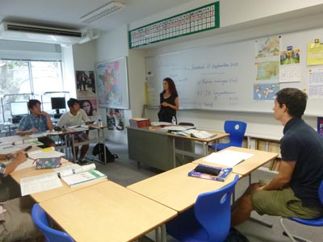
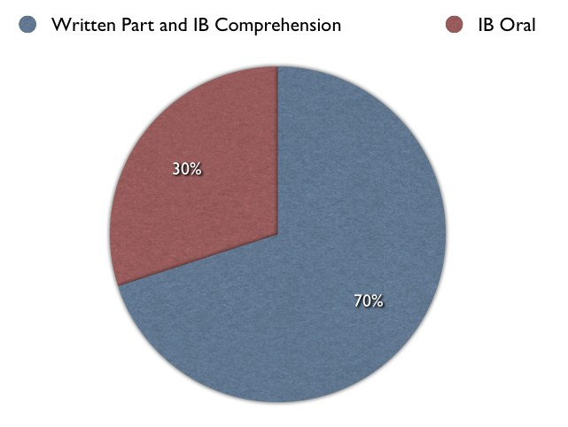

IB French
Course Description
Emphasis will be placed on four areas: oral comprehension, oral expression, writing comprehension, writing expression.
- During this year students are going to write a lot of essays about different topics like university, work, society, opinions, medias, travel, arts, history, economy, health care, gastronomie, nature, future, etc
- Students are going to have a French Literature class. They are going to study academic texts and authors from the 19th to the 21th century.
- Each week students are going to make a report on the news of the week in France and Europe. This is the Medias course and students are going to work on TV5, France2, Le Monde, Le Figaro, etc
- Resources on Internet and French newspapers and magazines.
- Students are going to have a regular writing expression and speech in class (once per week).
- Students are going to work on describing pictures (document authentic from Newspaper, Magazine, Commercial)
Course Outline and Major Learning Outcomes
During this year 2013-2014 we are going to study mainly with the Methodes: French IB and Ensuite (Grade 11/12).
Assessment
- Regular work and homework
- Written expression (letter, opinion, debate, speech, interview, philosophy)
- Oral expression and communication
- Performance/Skit/Role Play
- Student Self-Evaluation (Written quiz)
- Presentation in class (power-point, posters, postcards, etc)
- Exercise per day (IB Comprehension, writing expression and oral expression)
Resources
- Ensuite, Cours intermediaire de francais, C.P. Thomson, B.G. Hirsch. La grammaire progressive du Francais, niveau avance, Cle International
- Literature francaise, niveau intermediaire, Cle International
- TV5.org: Apprendre le francais (Exercises online/Audio documents/Video)
- France 2/France 24/French Newspaper/Radio France
Other Information
The student are going to be able to talk about any topic: society, politics, economics, sciences, family, health, costumes and tradition, ethics, etc. It is highly recommended to read the French newspaper or surf on TV5, France 2 and take time to listen to the French radio.
- Grade 11 Level = B1-B2 CECR (Cadre Europeen Commun de Reference)
- Grade 12 Level = B2-C1 CECR
- Certificate Diploma DELF/DALF (October/June. French Institut, Tokyo and Yokohama)
Behavior Expectations: Politeness and Respect. Salutations: "Bonjour, Merci, Au revoir." Good presentation.